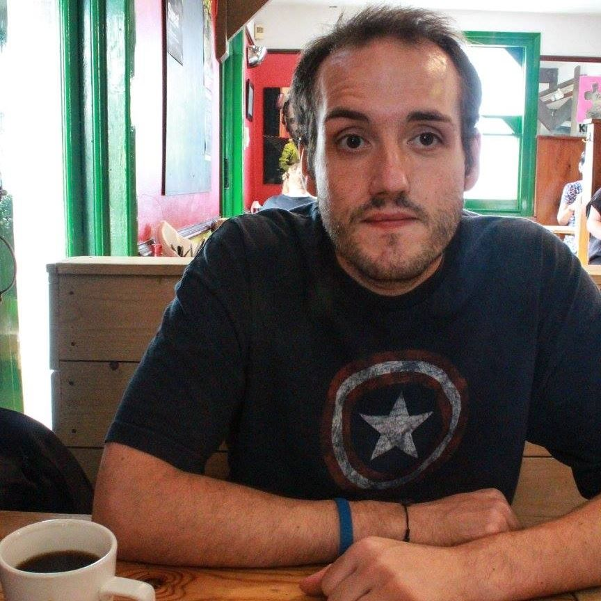

Development Projects
Paired Kidney Exchange Graph Visualiser
Incorporating the use of Vanilla Javascript, VisJS library and a NodeJS back-end this web application is designed to produce a direct graph of potential paired kidney exchanges.
Client/Server Draughts Application
Two player draughts game using Java sockets, input and output streams. Consists of a server and client with custom packets containing game state information. Written in Java.
Top Trumps CLI and Web Application
Simple Top Trumps card game built for both the command line interface and web browser, produced as part of a team. Written mainly in Java with HTML/CSS/Javascript front end. Inclusion of dropwizard back-end for creation of API.
Questionable: Django Web Application
Questionable is a Django based web application designed to facilitate communication between students and lecturers. Completed as part of a group project.
Profile
Versatile IT operations and support profressional with a Masters in Software Development and 10 years experience.
Outstanding troubleshooting and analytical skills.
Proficency in Java and Web Development.
Competent in Linux, Python, Windows, and Cloud infrastructure.
Profound interest in DevOps culture and associated technologies.
Experience
Palantir Technologies
April 2016 - September 2020
-
Supported 2000+ employees globally via Slack, Email, Phone and Jira Ticketing system.
-
Deployed Windows and MacOS systems using SCCM and JAMF.
-
Administered on premises Exchange and Active Directory infrastructure, along with an O365 cloud tenancy.
-
Maintained and Deployed VTC and VOIP systems worldwide alongside supporting Networking team in deploying network infrastructure.
The Royal Veterinery College
March 2015 - April 2016
-
Supported internal and external customers of the college's facilities.
-
Deployed and maintained hundreds of Laptops, PCs, VOIP and VTC systems.
-
Supported Networking and System administration teams in project roll outs and upgrades.
Apple UK
November 2010 - March 2015
-
Provided daily support to personal and business users of Apple technology.
-
Performed troubleshooting and repair on Apple Macbooks, Mac Minis, iMacs, iPods and iPhones.
-
Acquired the Apple Certified Mac Technician qualification and performed continued top up qualifications.
Education
MSc Software Development, Grade pending
University of Glasgow, 2019 - 2020
-
Pursued a passion for programming gaining proficency in Java
-
Gained an understanding of Database Design and Software Development Principals
-
Introduced to Algorithms and Data Structures
BA Film Studies and Production, Upper second class
University of Essex, 2007 - 2010
-
Gained hands on experience with producing short films and television
-
Worked as part of a small crew to produce short films and studio based videos
-
Excelled in usage and maintenance of audio and visual equipment associated with film and tv production